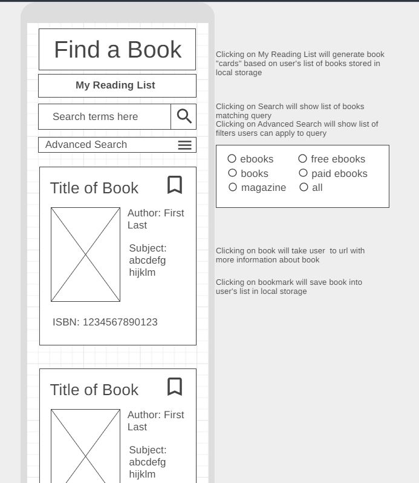
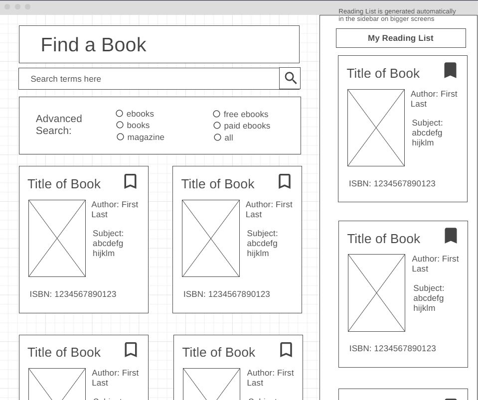

Purpose
The purpose of this web application is to provide a service that allows user to find books to read. Users will be able to search by title, author, subject, or isbn to view a list of books that meet their criteria. Users will be able to select a book and view more information on that volume. Results can also be filtered to show if the book is available online as an ebook, free ebook, paid ebook, partially viewable, or fully viewable. Once they find a book or twelve that they love, they can save the book to their reading list for convenient access later on.
Target Audience
This web application will be largely be for those who love to read. It can also be used as a way to locate books for research or learning purposes. Book lovers can use this to find books for leisure reading, while others may use it to find books on a particular topic of research. The built-in responsiveness will be allow users to utilize this application on a variety of devices. Here are some scenarios our target users may have experienced:
- I wish I could remember that one awesome book I saw that one time!
- What books are available online for free on a particular topic?
- Are there any ebooks about fairy tales?
- I finally have time to read, but I have no idea what to read...
Data Sources
- Google Books API: for list of books
- Local Storage: for user's reading list
Module List
- Main: (main.js)
- Local Storage Helper: (ls.js)
- API Helper: (bookAPI.js)
- Filter: (filter.js)
- Utilities: (utilities.js)
Wireframes
 Color Scheme
The website's main color will be a soft yellow. Books will be featured using the brighter accent colors.
| Main Color | Accent 1: | Accent 2: | Accent 3: | Accent 4: |
|---|---|---|---|---|
Typography
Header |
Site header and headings will be in this font |
Headings |
All headings not in the header throughout the site will be in this font and color. |
| Regular Text | Most text on the site will be this font, size, and color. This is for any text against a light background. |
| Light Paragraph Text | Any text against a dark background will be in this color. This includes text in the header. |